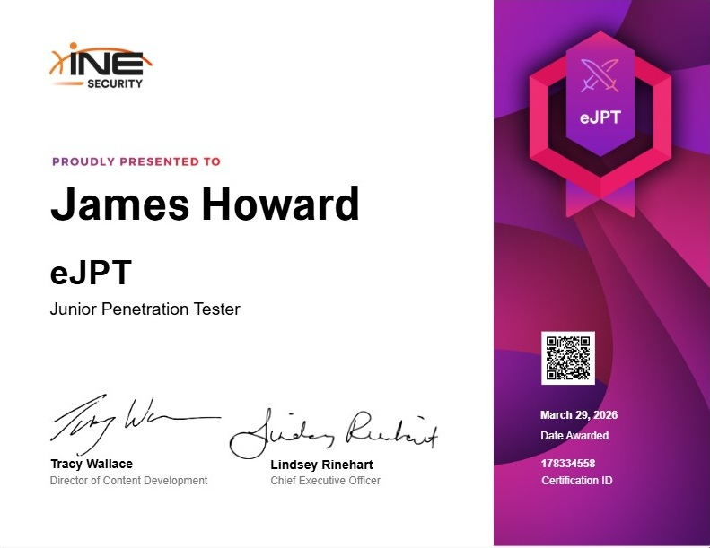

James Howard
Cybersecurity professional with hands-on experience in SOC monitoring, incident investigation, and cloud infrastructure. Specialising in Microsoft Sentinel, the Defender suite, and Azure security.
Cybersecurity professional with hands-on experience in SOC monitoring, incident investigation, and cloud infrastructure. Specialising in Microsoft Sentinel, the Defender suite, and Azure security.
Background
I am a Cyber Security Specialist finishing a Bachelor of Cyber Security at La Trobe University (WAM: 80, graduating October 2026). I combine technical depth in cloud security and SOC operations with physical security knowledge through my Certificate II in Security Operations.
My focus is on Microsoft cloud security: Sentinel, the Defender suite, KQL threat hunting, and Azure infrastructure, with a longer-term goal of specialising in critical infrastructure protection and converged physical/cyber security.
I am currently working toward the SC-200 and building a hands-on Microsoft Sentinel home lab documented publicly on GitHub.
Microsoft Sentinel environment - triaging alerts, investigating incidents, writing KQL detection queries, and supporting Sentinel audit workflows.
IT support and environment setup across the Microsoft 365 suite for a state sporting organisation.
Experience
OneStep Group · 12 Weeks
During my 12-week cyber security internship at OneStep Group I was embedded within a live Security Operations Centre environment built on Microsoft Sentinel. This was not a simulated or training environment; I was working with real client telemetry, real incidents, and real detection engineering challenges every day.
My primary responsibility was alert triage and incident investigation. I monitored the Sentinel incident queue, assessed the severity of incoming alerts, and investigated suspicious activity across client environments. This involved correlating events across multiple data sources (endpoint telemetry, identity logs, network traffic) to determine whether an alert represented a genuine threat or a false positive. I documented my findings and escalated confirmed incidents through the appropriate workflow.
Alongside triage work I contributed to detection engineering by writing and refining KQL queries used in Sentinel analytics rules. Understanding what attackers do at each stage of the cyber kill chain, informed by my study of the MITRE ATT&CK framework, meant I could think critically about what behaviours were worth detecting and how to write queries that minimised false positives without missing real threats.
I also supported the team's Sentinel audit workflow, which directly inspired my SOC Audit Architect project, a Python tool I built to automate the manual parts of that process. Seeing the inefficiency of the existing workflow in a real SOC environment gave me the motivation to solve it with code.
Technologies Used
Credentials
INE Security · March 29, 2026 · Certification ID: 178334558

I pursued the eJPT because it is practical and hands-on, something I value far more than certifications built purely around multiple choice questions. After studying network penetration testing at university I became genuinely passionate about analysing defence from inside the mind of an attacker. I believe a strong defence starts with knowing your enemy.
Working through this certification deepened my understanding of how attackers progress through the cyber attack chain, which has directly made me a better detection engineer. Pairing this with study of the MITRE ATT&CK framework gave me the attacker mindset needed for threat hunting, understanding not just what to detect, but why attackers behave the way they do and what they target next.
La Trobe University · WAM: 80 · Graduating October 2026
From a young age I believed engineering was the most important discipline in the world. I studied buildings, worked in construction, managed projects and stakeholders. But toward my late twenties something shifted. I had grown up navigating cities with paper maps and calling people on landlines, and now I had a supercomputer in my pocket, video calling people across the world, checking my bank, controlling infrastructure digitally. I realised the most critical infrastructure of the future wasn't concrete and steel. It was digital. That realisation led me to enrol in a Bachelor of Cyber Security at La Trobe University, and it is one of the best decisions I have ever made.
The degree has given me both the technical depth and the analytical mindset to operate in this field with confidence. I achieved an 89 in Network Engineering Fundamentals, which gave me a solid understanding of how data moves across networks, knowledge that is fundamental to understanding how attackers exploit them. In Data-Based Critical Thinking (also 89) I developed the structured reasoning skills that now shape how I investigate alerts and build detection logic. Introduction to Computer Forensics (85) taught me how to preserve and analyse digital evidence, an invaluable lens for incident response. And in Introduction to Penetration Testing (81) I first got to think like an attacker, which has permanently changed how I approach defence.
Most recently, I achieved a 91 in my Capstone Project, one of the highest marks in the cohort, building an enterprise-grade vulnerability scanning platform integrating OWASP ZAP, CodeQL, Semgrep, and Trivy into a CI/CD pipeline with ISO 27001-aligned reporting. The result was strong enough that our team has been recognised and will receive an award at the La Trobe University end-of-year awards ceremony. Alongside that, I completed Intermediate Network Engineering (82), deepening my understanding of advanced routing, switching, and the infrastructure that underpins modern security architecture.
My background in the physical world (buildings, access control, project management) gives me a perspective that most cyber professionals do not have. I believe the future of security is converged: the people who can think across both the physical and digital domains are the ones who will protect our most critical systems. That is the professional I am building myself to be.
Unarmed Guard · Crowd Control · CCTV & Control Room · 13 July 2026 to 5 August 2026
Most cybersecurity professionals never set foot on a physical site. They understand firewalls and detection rules, but they have never read a building plan, assessed a perimeter, or understood how access control hardware integrates with the systems they monitor. I have. My background in the construction industry gave me the ability to read engineering and architectural drawings, understand how buildings are designed from the ground up, and think critically about the physical environment that digital infrastructure lives inside.
The Certificate II in Security Operations is an 18-day full-time course covering unarmed guarding, crowd control, and CCTV and control room monitoring. At the end of it I will hold my individual security licence, giving me formal recognition in the physical security space. But the reason I am doing it goes beyond the licence. I want to understand physical security the way a practitioner does, not just in theory. Guard operations, access control procedures, CCTV monitoring, alarm response — these are the ground-level realities that sit beneath the digital telemetry I work with every day.
Physical security systems generate enormous amounts of data. Access control events, camera feeds, alarm triggers and visitor logs all flow into security platforms alongside traditional IT telemetry. Organisations that are mature in their security posture route this data into a SIEM or a Physical Security Information Management (PSIM) system, creating a unified operational picture. I want to be the person who can operate across both of those worlds: reading a site plan and understanding the access control architecture, then tracing that same event through the SIEM to correlate it with network activity. That capability — physical context combined with cyber detection — is what converged security actually means in practice, and it is what I am building toward.
Covers Microsoft Sentinel, KQL, the Defender suite, threat intelligence, analytics rules, playbooks, and incident response. Target: October 2026.
Microsoft Azure Administrator
Microsoft Azure Security Engineer
Microsoft Cybersecurity Architect
Advanced physical security operations and management
Work
Enterprise-grade vulnerability scanning platform for .NET APIs and React applications. Integrates OWASP ZAP, Nuclei, CodeQL, Semgrep, and Trivy into a CI/CD pipeline with ISO 27001-aligned reporting and a full web dashboard.
View on GitHub →Python automation tool for Microsoft Sentinel audits. Handles multi-file JSON merging, rule decomposition, automatic versioning, and generates colour-coded Excel reports with compliance signatures, built from real SOC audit experience.
View on GitHub →Hands-on Sentinel lab built in Azure for SC-200 exam preparation. Covers SIEM setup, custom KQL detection queries, threat intelligence ingestion via TAXII, analytics rules, Logic App playbooks, and full incident investigation walkthroughs.
View on GitHub →Red and blue team assessment of OWASP Top 10 vulnerabilities using Kali Linux and DVWA. Includes custom KQL detection rules written for Microsoft Sentinel to detect each exploited technique, bridging offensive and defensive skills.
View on GitHub →Toolkit